CODING AGENTS AS PIXEL WORLD MODELS
traex/GPT-6.1-Sol · 0083
点击播放 · 原生 RGB 像素
逐轮保存的候选
回放视频、检查图与代码变化。
每份候选均可单独播放。实际图片检查记录在下方工具轨迹中。
候选 01播放与检查图
点击播放 · 原生 RGB 像素

展开代码变化
--- 上一保存版本
+++ 本次保存版本
@@ -0,0 +1,173 @@
+from pathlib import Path
+import numpy as np
+from PIL import Image
+import cv2
+from scipy.ndimage import gaussian_filter
+from scipy.interpolate import PchipInterpolator
+from artifact_io import save
+
+ROOT=Path(__file__).resolve().parent
+S=3
+H,W=144,256
+src=np.array(Image.open(ROOT/'first_frame.png').convert('RGB'))
+f=src.astype(np.float32)
+statue_poly=np.array([(139.3,69.2),(142.5,69.4),(146,71),(147.5,74),(149.3,78),(151.5,81.8),(153.6,85),(154.5,87.8),(156,89.7),(156.5,92.8),(161.7,95),(161.4,99.6),(160.7,102),(161.5,106),(161.4,109.4),(159.7,112),(158.4,113.2),(161.5,116),(160.3,119.2),(163.5,121.3),(164.3,123.3),(167.2,124.5),(166,128.1),(162.9,129.8),(162,131.8),(156.5,133.1),(150.8,133),(146.5,134.5),(141,134),(137,132),(135,130.8),(130,130),(127.3,127.3),(125.9,123.9),(126.8,120.5),(129.9,117.5),(133,115.2),(138.7,112.1),(140.9,110),(140.5,108),(137.8,107),(138.5,105.4),(135.7,104.8),(134.8,102.7),(134.4,100.8),(133.6,97.2),(133.5,94.1),(134.4,90.5),(136.6,87.4),(139.8,85.5),(139.2,81.8),(137.8,78.6),(136.7,76.8),(136.3,74.6),(137.1,72.8),(137.5,71)],np.float32)
+shadow_poly=np.array([(137,1),(133,2),(131.7,5),(132,7),(129.2,9.5),(128.4,12),(130,15.7),(128.5,19),(131,23),(129,24.3),(126,25.3),(124.3,28.5),(123,32),(122.1,38),(122.1,49),(123.2,57.9),(125.1,63.5),(128.6,66),(132,65.5),(135,62.5),(137,69),(132.2,71),(131.5,74),(126.5,74.7),(119.8,77),(114.7,79.8),(110.8,84),(109,87),(109,94),(113,98),(181,98),(180,92),(178.4,89.7),(174,89.4),(173,85.1),(169.2,83.1),(172,80.6),(172.9,77.7),(171.7,74.4),(173.8,70.3),(173.4,65.8),(171.9,60.6),(170.3,53.3),(169.8,49.5),(172.4,45.4),(174.1,40.7),(174.9,36.1),(173.4,32),(170.2,28.7),(166,26.1),(161,23.7),(156.7,20.8),(153.4,17),(150.7,13.2),(148.9,9),(146.1,5),(143.7,2),(140.3,1)],np.float32)
+
+def polymask(poly, scale=1):
+ m=np.zeros((H*scale,W*scale),np.uint8)
+ cv2.fillPoly(m,[np.round(poly*scale).astype(np.int32)],255)
+ return m
+
+# Reconstruct the unchanged illuminated wall under the old moving shadow.
+yy,xx=np.mgrid[:H,:W]
+gray=f.mean(2)
+oldsh=polymask(shadow_poly)>0
+region=(yy<109)&(xx>37)&(xx<251)
+known=region & (~(cv2.dilate(oldsh.astype(np.uint8),np.ones((15,15),np.uint8))>0)) & (gray>45)
+# A smooth illumination surface fit to the visible wall, not to the moving subject.
+X=(xx-146)/110.; Y=(yy-70)/90.
+terms=[X**i*Y**j for i in range(6) for j in range(6-i)]
+A=np.stack([a[known] for a in terms],axis=1)
+coef=np.linalg.lstsq(A,f[known],rcond=None)[0]
+wall=np.stack(terms,axis=-1)@coef
+wall=np.clip(wall,0,180)
+# Keep the photographic background unchanged except in the occluded region.
+clear=cv2.dilate(polymask(shadow_poly),np.ones((5,5),np.uint8)).astype(np.float32)/255
+clear=gaussian_filter(clear,.65)
+clear[yy>=97]=0
+bg=f*(1-clear[:,:,None])+wall*clear[:,:,None]
+sm=polymask(statue_poly)
+# Fill removed statue on the table with the surrounding shadowed tabletop.
+clean=cv2.inpaint(np.uint8(np.clip(bg,0,255)), cv2.dilate(sm,np.ones((3,3),np.uint8)),4,cv2.INPAINT_TELEA).astype(float)
+objclear=cv2.dilate(sm,np.ones((3,3),np.uint8)).astype(float)/255
+objclear=gaussian_filter(objclear,.45)
+# Preserve the fixed broad base shadow on the wall.
+clean[yy<97]=wall[yy<97]
+staticshadow=(yy>=97)&(yy<=108)&(xx>=98)&(xx<=192)
+clean[staticshadow]=f[staticshadow]
+# The uncovered rotating platter is still circular and black.
+e=((xx-146.5)/25.8)**2+((yy-124.7)/8.7)**2
+pl=e<1.0
+v=18+5*np.clip((yy-118)/14,0,1)+3*np.exp(-((xx-144)/21)**2)
+plrgb=np.stack([v*.93,v*.97,v],axis=-1)
+clean[pl]=plrgb[pl]
+# dark background behind the figure, and unchanged top lip of the platform.
+bg=bg*(1-objclear[:,:,None])+clean*objclear[:,:,None]
+Image.fromarray(np.uint8(np.clip(bg,0,255))).save(ROOT/'.tmp/background.png')
+
+# Geometry is an image-derived set of rounded horizontal sections. The visible
+# porcelain is texture mapped directly from the photograph, including its glaze.
+def sections(poly, ymin,ymax,dy,na, radiusfun):
+ mask=polymask(poly,8)
+ ys=np.arange(ymin,ymax,dy)
+ inds=np.clip(np.round(ys*8).astype(int),0,H*8-1)
+ left=[];right=[];valid=[]
+ for y,row in zip(ys,mask[inds]):
+ ix=np.flatnonzero(row)
+ if len(ix)>1:
+ left.append(ix[0]/8);right.append(ix[-1]/8);valid.append(y)
+ ys=np.array(valid); left=np.array(left);right=np.array(right)
+ # Subpixel smoothing removes staircase tessellation but keeps sculpted contour.
+ left=gaussian_filter(left,.5);right=gaussian_filter(right,.5)
+ phi=np.linspace(-np.pi,np.pi,na,endpoint=False)
+ mid=(left+right)/2
+ rx=(right-left)/2
+ p=phi[None,:]
+ xp=mid[:,None]+rx[:,None]*np.sin(p)
+ y0=np.broadcast_to(ys[:,None],xp.shape)
+ r=radiusfun(ys,rx)
+ zp=r[:,None]*np.cos(p)
+ n=np.stack([np.broadcast_to(np.sin(p),xp.shape)/np.maximum(rx[:,None],.4),np.broadcast_to(np.cos(p),xp.shape)/np.maximum(r[:,None],.4)],axis=-1)
+ n/=np.maximum(np.linalg.norm(n,axis=-1,keepdims=True),1e-6)
+ return xp.ravel(),y0.ravel(),zp.ravel(),np.broadcast_to(p,xp.shape).ravel(),n.reshape(-1,2)
+
+radinterp=PchipInterpolator([69,74,82,87,93,100,108,115,122,130,135],[3.6,4.8,5.0,5.6,7.5,8.5,7.7,10.5,12.0,12.5,9.5])
+def sr(y,rx):
+ return np.minimum(radinterp(y),np.maximum(1.5,rx*1.1))
+ox,oy,oz,phi,norm=sections(statue_poly,69.3,134.6,.095,650,sr)
+mapx=ox.astype(np.float32).reshape(-1,650);mapy=oy.astype(np.float32).reshape(-1,650)
+color=cv2.remap(f,mapx,mapy,cv2.INTER_CUBIC,borderMode=cv2.BORDER_REPLICATE).reshape(-1,3)
+# On the unseen rear, continue the smooth ivory material with delicate robe folds.
+back=np.clip(-np.cos(phi)*3,0,1)
+fold=(np.sin(phi*13+oy*.075)+.6*np.sin(phi*22-oy*.032))
+cloth=np.clip((oy-85)/9,0,1)
+rearv=203+17*np.cos(phi*2)+cloth*fold*10
+rearcolor=np.stack([rearv+7,rearv+5,rearv-8],axis=1)
+color=color*(1-back[:,None])+rearcolor*back[:,None]
+color=np.clip(color,0,255)
+# Preserve shade variation and glaze overexposure while the light stays fixed.
+nx,nz=norm[:,0],norm[:,1]
+base_light=.36+.64*np.maximum(0,nz*.97-nx*.10)
+
+sx,sy,sz,sphi,snorm=sections(shadow_poly,1,98,.13,500,lambda y,rx: np.maximum(2,rx*.70))
+
+# Fixed lamp in the foreground occludes the rotating base.
+lamp_poly=np.array([(146.5,127),(151.3,127.2),(152.5,130.7),(152.8,135.5),(155.5,139),(161,142),(161,144),(135,144),(138,139),(143.7,136.8),(145.5,134.5),(145.6,130)],np.float32)
+lamp=polymask(lamp_poly).astype(float)/255
+lamp*=np.clip((62-gray)/25,0,1)
+lamp=gaussian_filter(lamp,.25)
+
+# Orthographic camera elevation accounts for the small vertical parallax of turning.
+def project(x,y,z,a,axis=146.5,elev=.19):
+ c,s=np.cos(a),np.sin(a)
+ xx=(x-axis)*c-z*s+axis
+ zz=(x-axis)*s+z*c
+ yy=y+elev*(zz-z)
+ return xx,yy,zz
+
+# Dense surface splatting with a real z buffer, rendered at 3x for antialiasing.
+def render_surface(x,y,z,col):
+ xi=np.round(x*S).astype(np.int32);yi=np.round(y*S).astype(np.int32)
+ order=np.argsort(z)
+ xi=xi[order];yi=yi[order];z=z[order];col=col[order]
+ out=np.zeros((H*S*W*S,3),np.float32)
+ depth=np.full(H*S*W*S,-1e9,np.float32)
+ for dx,dy in [(0,0),(-1,0),(1,0),(0,-1),(0,1)]:
+ xc=xi+dx;yc=yi+dy
+ ok=(xc>=0)&(xc<W*S)&(yc>=0)&(yc<H*S)
+ ids=yc[ok]*W*S+xc[ok];zz=z[ok]
+ np.maximum.at(depth,ids,zz)
+ for dx,dy in [(0,0),(-1,0),(1,0),(0,-1),(0,1)]:
+ xc=xi+dx;yc=yi+dy
+ ok=(xc>=0)&(xc<W*S)&(yc>=0)&(yc<H*S)
+ ids=yc[ok]*W*S+xc[ok];zz=z[ok];cc=col[ok]
+ good=zz>=depth[ids]-1e-4
+ out[ids[good]]=cc[good]
+ alpha=(depth>-1e8).reshape(H*S,W*S).astype(np.float32)
+ out=out.reshape(H*S,W*S,3)
+ out=cv2.resize(out,(W,H),interpolation=cv2.INTER_AREA)
+ alpha=cv2.resize(alpha,(W,H),interpolation=cv2.INTER_AREA)
+ return out,alpha
+
+def shadow_image(a):
+ x,y,z=project(sx,sy,sz,a,axis=143.5,elev=.10)
+ high=np.zeros((H*S,W*S),np.uint8)
+ xi=np.round(x*S).astype(int);yi=np.round(y*S).astype(int)
+ ok=(xi>=0)&(xi<W*S)&(yi>=0)&(yi<98*S)
+ high[yi[ok],xi[ok]]=255
+ high=cv2.dilate(high,np.ones((3,3),np.uint8))
+ high=cv2.morphologyEx(high,cv2.MORPH_CLOSE,np.ones((3,3),np.uint8))
+ m=cv2.resize(high.astype(float)/255,(W,H),interpolation=cv2.INTER_AREA)
+ m=gaussian_filter(m,.72)
+ m[yy>=98]=0
+ return m
+
+frames=[src.copy()]
+for i in range(1,20):
+ angle=np.deg2rad(i*3.)
+ sh=shadow_image(angle)
+ frame=bg*(1-sh[:,:,None])+np.array([7.0,6.1,4.5])[None,None,:]*sh[:,:,None]
+ x,y,z=project(ox,oy,oz,angle)
+ newnx=nx*np.cos(angle)-nz*np.sin(angle)
+ newnz=nx*np.sin(angle)+nz*np.cos(angle)
+ lighting=.36+.64*np.maximum(0,newnz*.97-newnx*.10)
+ change=np.clip(lighting/base_light,.53,1.22)
+ # Tiny glaze sheen from the unchanging lamp remains strongest toward its beam.
+ cols=np.clip(color*change[:,None],0,255)
+ obj,alpha=render_surface(x,y,z,cols)
+ frame=frame*(1-alpha[:,:,None])+obj
+ frame=frame*(1-lamp[:,:,None])+f*lamp[:,:,None]
+ frames.append(np.uint8(np.clip(np.round(frame),0,255)))
+frames=np.array(frames,dtype=np.uint8)
+save(frames,ROOT)
候选 02播放与检查图
点击播放 · 原生 RGB 像素
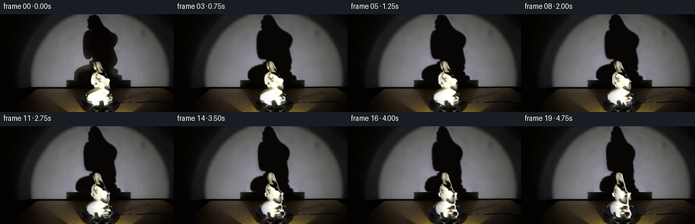
展开代码变化
--- 上一保存版本
+++ 本次保存版本
@@ -157,7 +157,8 @@
for i in range(1,20):
angle=np.deg2rad(i*3.)
sh=shadow_image(angle)
- frame=bg*(1-sh[:,:,None])+np.array([7.0,6.1,4.5])[None,None,:]*sh[:,:,None]
+ shadow_rgb=np.stack([6+20*np.exp(-((xx-120)/13)**2)*np.clip(yy/70,0,1),5+20*np.exp(-((xx-120)/13)**2)*np.clip(yy/70,0,1),4+17*np.exp(-((xx-120)/13)**2)*np.clip(yy/70,0,1)],axis=-1)
+ frame=bg*(1-sh[:,:,None])+shadow_rgb*sh[:,:,None]
x,y,z=project(ox,oy,oz,angle)
newnx=nx*np.cos(angle)-nz*np.sin(angle)
newnz=nx*np.sin(angle)+nz*np.cos(angle)
@@ -171,3 +172,5 @@
frames.append(np.uint8(np.clip(np.round(frame),0,255)))
frames=np.array(frames,dtype=np.uint8)
save(frames,ROOT)
+
+np.save(ROOT/'.tmp/raw.npy',frames)
候选 03播放与检查图
候选 04播放与检查图
点击播放 · 原生 RGB 像素

展开代码变化
--- 上一保存版本 +++ 本次保存版本 @@ -33,10 +33,17 @@ wall=np.stack(terms,axis=-1)@coef wall=np.clip(wall,0,180) # Keep the photographic background unchanged except in the occluded region. -clear=cv2.dilate(polymask(shadow_poly),np.ones((5,5),np.uint8)).astype(np.float32)/255 -clear=gaussian_filter(clear,.65) -clear[yy>=97]=0 -bg=f*(1-clear[:,:,None])+wall*clear[:,:,None] +clear=cv2.dilate(polymask(shadow_poly),np.ones((9,9),np.uint8))>0 +clear[yy>=97]=False +# Harmonic continuation of the measured low-frequency illumination residual +# avoids any visible boundary where the original silhouette was removed. +res=f-wall +res[clear]=0 +for _ in range(1400): + avg=cv2.filter2D(res,-1,np.array([[0,.25,0],[.25,0,.25],[0,.25,0]],np.float32)) + res[clear]=avg[clear] +bg=f.copy() +bg[clear]=(wall+res)[clear] sm=polymask(statue_poly) # Fill removed statue on the table with the surrounding shadowed tabletop. clean=cv2.inpaint(np.uint8(np.clip(bg,0,255)), cv2.dilate(sm,np.ones((3,3),np.uint8)),4,cv2.INPAINT_TELEA).astype(float)
候选 05播放与检查图
点击播放 · 原生 RGB 像素

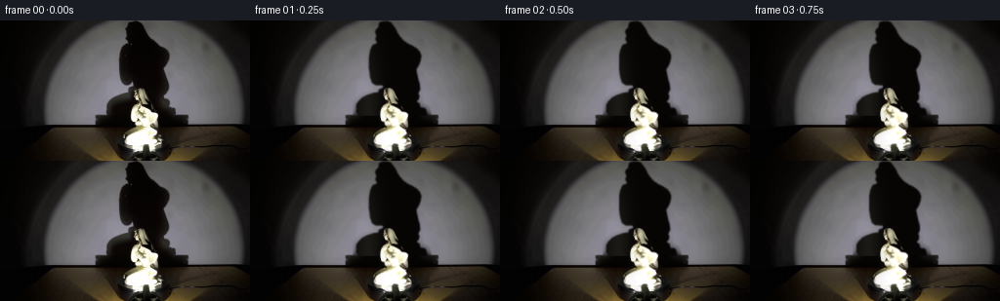
展开代码变化
--- 上一保存版本 +++ 本次保存版本 @@ -37,11 +37,13 @@ clear[yy>=97]=False # Harmonic continuation of the measured low-frequency illumination residual # avoids any visible boundary where the original silhouette was removed. -res=f-wall -res[clear]=0 -for _ in range(1400): - avg=cv2.filter2D(res,-1,np.array([[0,.25,0],[.25,0,.25],[0,.25,0]],np.float32)) - res[clear]=avg[clear] +res=gaussian_filter(f-wall,(1.4,1.4,0)) +for row in range(97): + ix=np.flatnonzero(clear[row]) + if len(ix): + lo=max(0,int(ix[0])-1); hi=min(W-1,int(ix[-1])+1) + u=(np.arange(lo,hi+1)-lo)/max(hi-lo,1) + res[row,lo:hi+1]=res[row,lo][None,:]*(1-u[:,None])+res[row,hi][None,:]*u[:,None] bg=f.copy() bg[clear]=(wall+res)[clear] sm=polymask(statue_poly) @@ -50,9 +52,10 @@ objclear=cv2.dilate(sm,np.ones((3,3),np.uint8)).astype(float)/255 objclear=gaussian_filter(objclear,.45) # Preserve the fixed broad base shadow on the wall. -clean[yy<97]=wall[yy<97] +clean[yy<97]=bg[yy<97] staticshadow=(yy>=97)&(yy<=108)&(xx>=98)&(xx<=192) clean[staticshadow]=f[staticshadow] +clean[staticshadow & (objclear>.05)]=np.array([7.,6.,4.]) # The uncovered rotating platter is still circular and black. e=((xx-146.5)/25.8)**2+((yy-124.7)/8.7)**2 pl=e<1.0
候选 06播放与检查图

候选 07播放与检查图
点击播放 · 原生 RGB 像素

展开代码变化
--- 上一保存版本
+++ 本次保存版本
@@ -150,24 +150,23 @@
alpha=cv2.resize(alpha,(W,H),interpolation=cv2.INTER_AREA)
return out,alpha
+# Photographic penumbra and faint fill light are carried by the shadow surface.
+shadow_template=np.clip((bg.mean(2)-gray)/np.maximum(bg.mean(2)-6,1),0,1)
+shadow_template[cv2.dilate(sm,np.ones((3,3),np.uint8))>0]=1
+shadow_col=cv2.remap(shadow_template.astype(np.float32),sx.astype(np.float32).reshape(-1,500),sy.astype(np.float32).reshape(-1,500),cv2.INTER_LINEAR,borderMode=cv2.BORDER_REPLICATE).ravel()
+shadow_col=np.repeat(shadow_col[:,None],3,axis=1)
def shadow_image(a):
x,y,z=project(sx,sy,sz,a,axis=143.5,elev=.10)
- high=np.zeros((H*S,W*S),np.uint8)
- xi=np.round(x*S).astype(int);yi=np.round(y*S).astype(int)
- ok=(xi>=0)&(xi<W*S)&(yi>=0)&(yi<98*S)
- high[yi[ok],xi[ok]]=255
- high=cv2.dilate(high,np.ones((3,3),np.uint8))
- high=cv2.morphologyEx(high,cv2.MORPH_CLOSE,np.ones((3,3),np.uint8))
- m=cv2.resize(high.astype(float)/255,(W,H),interpolation=cv2.INTER_AREA)
- m=gaussian_filter(m,.72)
+ out,alpha=render_surface(x,y,z,shadow_col)
+ m=gaussian_filter(out[:,:,0],.52)
m[yy>=98]=0
- return m
+ return np.clip(m,0,1)
frames=[src.copy()]
for i in range(1,20):
angle=np.deg2rad(i*3.)
sh=shadow_image(angle)
- shadow_rgb=np.stack([6+20*np.exp(-((xx-120)/13)**2)*np.clip(yy/70,0,1),5+20*np.exp(-((xx-120)/13)**2)*np.clip(yy/70,0,1),4+17*np.exp(-((xx-120)/13)**2)*np.clip(yy/70,0,1)],axis=-1)
+ shadow_rgb=np.zeros((H,W,3))+np.array([6.,5.,4.])
frame=bg*(1-sh[:,:,None])+shadow_rgb*sh[:,:,None]
x,y,z=project(ox,oy,oz,angle)
newnx=nx*np.cos(angle)-nz*np.sin(angle)
候选 08播放与检查图
候选 09播放与检查图
点击播放 · 原生 RGB 像素
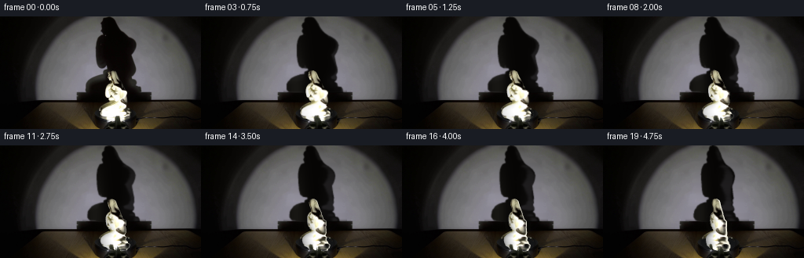
展开代码变化
--- 上一保存版本
+++ 本次保存版本
@@ -158,7 +158,11 @@
def shadow_image(a):
x,y,z=project(sx,sy,sz,a,axis=143.5,elev=.10)
out,alpha=render_surface(x,y,z,shadow_col)
- m=gaussian_filter(out[:,:,0],.52)
+ # Photograph provides the dim ambient fill; it must not leave an opaque
+ # contour on the back as previously unseen surface becomes visible.
+ uniform=gaussian_filter(alpha,.63)
+ mapped=gaussian_filter(out[:,:,0],.52)
+ m=.20*mapped+.80*uniform
m[yy>=98]=0
return np.clip(m,0,1)
@@ -166,7 +170,7 @@
for i in range(1,20):
angle=np.deg2rad(i*3.)
sh=shadow_image(angle)
- shadow_rgb=np.zeros((H,W,3))+np.array([6.,5.,4.])
+ shadow_rgb=np.stack([6+17*np.exp(-((xx-120)/13)**2)*np.clip(yy/70,0,1),5+17*np.exp(-((xx-120)/13)**2)*np.clip(yy/70,0,1),4+15*np.exp(-((xx-120)/13)**2)*np.clip(yy/70,0,1)],axis=-1)
frame=bg*(1-sh[:,:,None])+shadow_rgb*sh[:,:,None]
x,y,z=project(ox,oy,oz,angle)
newnx=nx*np.cos(angle)-nz*np.sin(angle)
可观测工具轨迹
实际执行的命令与返回图片。
命令 1exit 0
/bin/bash -lc "ls -la && cat prompt.txt && printf '\\n---RULES---\\n' && cat GENERATION_RULES.md"
命令 2exit 0
/bin/bash -lc "cat artifact_io.py && python - <<'PY'
from PIL import Image
im=Image.open('first_frame.png');print(im.size)
im.resize((1024,576)).save('.tmp/up.png')
im.crop((110,65,179,141)).resize((552,608)).save('.tmp/statue.png')
PY"命令 3exit 0
/bin/bash -lc "python - <<'PY'
import cv2, numpy as np, scipy
from PIL import Image
im=Image.open('first_frame.png')
im.crop((90,0,196,111)).resize((636,666)).save('.tmp/shadow.png')
print('cv',cv2.__version__)
PY"命令 4exit 0
/bin/bash -lc "python - <<'PY'
from PIL import Image,ImageDraw
im=Image.open('first_frame.png').resize((1024,576)); d=ImageDraw.Draw(im)
for x in range(100,181,5):
d.line((x*4,240,x*4,550),fill=(120,0,0),width=1);d.text((x*4,240),str(x),fill=(255,80,80))
for y in range(65,136,5):
d.line((400,y*4,724,y*4),fill=(120,0,0),width=1); d.text((704,y*4),str(y),fill=(255,80,80))
im.save('.tmp/grid.png')
PY"命令 5exit 0
/bin/bash -lc "python - <<'PY'
from PIL import Image,ImageDraw
im=Image.open('first_frame.png').resize((1024,576)); d=ImageDraw.Draw(im)
for x in range(95,196,5):
d.line((x*4,0,x*4,440),fill=(120,0,0),width=1);d.text((x*4,4),str(x),fill=(255,80,80))
for y in range(0,111,5):
d.line((380,y*4,784,y*4),fill=(120,0,0),width=1); d.text((764,y*4),str(y),fill=(255,80,80))
im.save('.tmp/gridsh.png')
PY"命令 6exit 1
/bin/bash -lc "cat > generate.py <<'PY'
from pathlib import Path
import numpy as np
from PIL import Image
import cv2
from scipy.ndimage import gaussian_filter
from scipy.interpolate import PchipInterpolator
from artifact_io import save
ROOT=Path(__file__).resolve().parent
S=3
H,W=144,256
src=np.array(Image.open(ROOT/'first_frame.png').convert('RGB'))
f=src.astype(np.float32)
statue_poly=np.array([(139.3,69.2),(142.5,69.4),(146,71),(147.5,74),(149.3,78),(151.5,81.8),(153.6,85),(154.5,87.8),(156,89.7),(156.5,92.8),(161.7,95),(161.4,99.6),(160.7,102),(161.5,106),(161.4,109.4),(159.7,112),(158.4,113.2),(161.5,116),(160.3,119.2),(163.5,121.3),(164.3,123.3),(167.2,124.5),(166,128.1),(162.9,129.8),(162,131.8),(156.5,133.1),(150.8,133),(146.5,134.5),(141,134),(137,132),(135,130.8),(130,130),(127.3,127.3),(125.9,123.9),(126.8,120.5),(129.9,117.5),(133,115.2),(138.7,112.1),(140.9,110),(140.5,108),(137.8,107),(138.5,105.4),(135.7,104.8),(134.8,102.7),(134.4,100.8),(133.6,97.2),(133.5,94.1),(134.4,90.5),(136.6,87.4),(139.8,85.5),(139.2,81.8),(137.8,78.6),(136.7,76.8),(136.3,74.6),(137.1,72.8),(137.5,71)],np.float32)
shadow_poly=np.array([(137,1),(133,2),(131.7,5),(132,7),(129.2,9.5),(128.4,12),(130,15.7),(128.5,19),(131,23),(129,24.3),(126,25.3),(124.3,28.5),(123,32),(122.1,38),(122.1,49),(123.2,57.9),(125.1,63.5),(128.6,66),(132,65.5),(135,62.5),(137,69),(132.2,71),(131.5,74),(126.5,74.7),(119.8,77),(114.7,79.8),(110.8,84),(109,87),(109,94),(113,98),(181,98),(180,92),(178.4,89.7),(174,89.4),(173,85.1),(169.2,83.1),(172,80.6),(172.9,77.7),(171.7,74.4),(173.8,70.3),(173.4,65.8),(171.9,60.6),(170.3,53.3),(169.8,49.5),(172.4,45.4),(174.1,40.7),(174.9,36.1),(173.4,32),(170.2,28.7),(166,26.1),(161,23.7),(156.7,20.8),(153.4,17),(150.7,13.2),(148.9,9),(146.1,5),(143.7,2),(140.3,1)],np.float32)
def polymask(poly, scale=1):
m=np.zeros((H*scale,W*scale),np.uint8)
cv2.fillPoly(m,[np.round(poly*scale).astype(np.int32)],255)
return m
# Reconstruct the unchanged illuminated wall under the old moving shadow.
yy,xx=np.mgrid[:H,:W]
gray=f.mean(2)
oldsh=polymask(shadow_poly)>0
region=(yy<109)&(xx>37)&(xx<251)
known=region & (~(cv2.dilate(oldsh.astype(np.uint8),np.ones((15,15),np.uint8))>0)) & (gray>45)
# A smooth illumination surface fit to the visible wall, not to the moving subject.
X=(xx-146)/110.; Y=(yy-70)/90.
terms=[X**i*Y**j for i in range(6) for j in range(6-i)]
A=np.stack([a[known] for a in terms],axis=1)
coef=np.linalg.lstsq(A,f[known],rcond=None)[0]
wall=np.stack(terms,axis=-1)@coef
wall=np.clip(wall,0,180)
# Keep the photographic background unchanged except in the occluded region.
clear=cv2.dilate(polymask(shadow_poly),np.ones((5,5),np.uint8)).astype(np.float32)/255
clear=gaussian_filter(clear,.65)
clear[yy>=97]=0
bg=f*(1-clear[:,:,None])+wall*clear[:,:,None]
sm=polymask(statue_poly)
# Fill removed statue on the table with the surrounding shadowed tabletop.
clean=cv2.inpaint(np.uint8(np.clip(bg,0,255)), cv2.dilate(sm,np.ones((3,3),np.uint8)),4,cv2.INPAINT_TELEA).astype(float)
objclear=cv2.dilate(sm,np.ones((3,3),np.uint8)).astype(float)/255
objclear=gaussian_filter(objclear,.45)
# Preserve the fixed broad base shadow on the wall.
clean[yy<97]=wall[yy<97]
staticshadow=(yy>=97)&(yy<=108)&(xx>=98)&(xx<=192)
clean[staticshadow]=f[staticshadow]
# The uncovered rotating platter is still circular and black.
e=((xx-146.5)/25.8)**2+((yy-124.7)/8.7)**2
pl=e<1.0
v=18+5*np.clip((yy-118)/14,0,1)+3*np.exp(-((xx-144)/21)**2)
plrgb=np.stack([v*.93,v*.97,v],axis=-1)
clean[pl]=plrgb[pl]
# dark background behind the figure, and unchanged top lip of the platform.
bg=bg*(1-objclear[:,:,None])+clean*objclear[:,:,None]
Image.fromarray(np.uint8(np.clip(bg,0,255))).save(ROOT/'.tmp/background.png')
# Geometry is an image-derived set of rounded horizontal sections. The visible
# porcelain is texture mapped directly from the photograph, including its glaze.
def sections(poly, ymin,ymax,dy,na, radiusfun):
mask=polymask(poly,8)
ys=np.arange(ymin,ymax,dy)
inds=np.clip(np.round(ys*8).astype(int),0,H*8-1)
left=[];right=[];valid=[]
for y,row in zip(ys,mask[inds]):
ix=np.flatnonzero(row)
if len(ix)>1:
left.append(ix[0]/8);right.append(ix[-1]/8);valid.append(y)
ys=np.array(valid); left=np.array(left);right=np.array(right)
# Subpixel smoothing removes staircase tessellation but keeps sculpted contour.
left=gaussian_filter(left,.5);right=gaussian_filter(right,.5)
phi=np.linspace(-np.pi,np.pi,na,endpoint=False)
mid=(left+right)/2
rx=(right-left)/2
p=phi[None,:]
xp=mid[:,None]+rx[:,None]*np.sin(p)
y0=np.broadcast_to(ys[:,None],xp.shape)
r=radiusfun(ys,rx)
zp=r[:,None]*np.cos(p)
n=np.stack([np.broadcast_to(np.sin(p),xp.shape)/np.maximum(rx[:,None],.4),np.broadcast_to(np.cos(p),xp.shape)/np.maximum(r[:,None],.4)],axis=-1)
n/=np.maximum(np.linalg.norm(n,axis=-1,keepdims=True),1e-6)
return xp.ravel(),y0.ravel(),zp.ravel(),np.broadcast_to(p,xp.shape).ravel(),n.reshape(-1,2)
radinterp=PchipInterpolator([69,74,82,87,93,100,108,115,122,130,135],[3.6,4.8,5.0,5.6,7.5,8.5,7.7,10.5,12.0,12.5,9.5])
def sr(y,rx):
return np.minimum(radinterp(y),np.maximum(1.5,rx*1.1))
ox,oy,oz,phi,norm=sections(statue_poly,69.3,134.6,.095,650,sr)
mapx=ox.astype(np.float32).reshape(-1,1);mapy=oy.astype(np.float32).reshape(-1,1)
color=cv2.remap(f,mapx,mapy,cv2.INTER_CUBIC,borderMode=cv2.BORDER_REPLICATE).reshape(-1,3)
# On the unseen rear, continue the smooth ivory material with delicate robe folds.
back=np.clip(-np.cos(phi)*3,0,1)
fold=(np.sin(phi*13+oy*.075)+.6*np.sin(phi*22-oy*.032))
cloth=np.clip((oy-85)/9,0,1)
rearv=203+17*np.cos(phi*2)+cloth*fold*10
rearcolor=np.stack([rearv+7,rearv+5,rearv-8],axis=1)
color=color*(1-back[:,None])+rearcolor*back[:,None]
color=np.clip(color,0,255)
# Preserve shade variation and glaze overexposure while the light stays fixed.
nx,nz=norm[:,0],norm[:,1]
base_light=.36+.64*np.maximum(0,nz*.97-nx*.10)
sx,sy,sz,sphi,snorm=sections(shadow_poly,1,98,.13,500,lambda y,rx: np.maximum(2,rx*.70))
# Fixed lamp in the foreground occludes the rotating base.
lamp_poly=np.array([(146.5,127),(151.3,127.2),(152.5,130.7),(152.8,135.5),(155.5,139),(161,142),(161,144),(135,144),(138,139),(143.7,136.8),(145.5,134.5),(145.6,130)],np.float32)
lamp=polymask(lamp_poly).astype(float)/255
lamp*=np.clip((62-gray)/25,0,1)
lamp=gaussian_filter(lamp,.25)
# Orthographic camera elevation accounts for the small vertical parallax of turning.
def project(x,y,z,a,axis=146.5,elev=.19):
c,s=np.cos(a),np.sin(a)
xx=(x-axis)*c-z*s+axis
zz=(x-axis)*s+z*c
yy=y+elev*(zz-z)
return xx,yy,zz
# Dense surface splatting with a real z buffer, rendered at 3x for antialiasing.
def render_surface(x,y,z,col):
xi=np.round(x*S).astype(np.int32);yi=np.round(y*S).astype(np.int32)
order=np.argsort(z)
xi=xi[order];yi=yi[order];z=z[order];col=col[order]
out=np.zeros((H*S*W*S,3),np.float32)
depth=np.full(H*S*W*S,-1e9,np.float32)
for dx,dy in [(0,0),(-1,0),(1,0),(0,-1),(0,1)]:
xc=xi+dx;yc=yi+dy
ok=(xc>=0)&(xc<W*S)&(yc>=0)&(yc<H*S)
ids=yc[ok]*W*S+xc[ok];zz=z[ok]
np.maximum.at(depth,ids,zz)
for dx,dy in [(0,0),(-1,0),(1,0),(0,-1),(0,1)]:
xc=xi+dx;yc=yi+dy
ok=(xc>=0)&(xc<W*S)&(yc>=0)&(yc<H*S)
ids=yc[ok]*W*S+xc[ok];zz=z[ok];cc=col[ok]
good=zz>=depth[ids]-1e-4
out[ids[good]]=cc[good]
alpha=(depth>-1e8).reshape(H*S,W*S).astype(np.float32)
out=out.reshape(H*S,W*S,3)
out=cv2.resize(out,(W,H),interpolation=cv2.INTER_AREA)
alpha=cv2.resize(alpha,(W,H),interpolation=cv2.INTER_AREA)
return out,alpha
def shadow_image(a):
x,y,z=project(sx,sy,sz,a,axis=143.5,elev=.10)
high=np.zeros((H*S,W*S),np.uint8)
xi=np.round(x*S).astype(int);yi=np.round(y*S).astype(int)
ok=(xi>=0)&(xi<W*S)&(yi>=0)&(yi<98*S)
high[yi[ok],xi[ok]]=255
high=cv2.dilate(high,np.ones((3,3),np.uint8))
high=cv2.morphologyEx(high,cv2.MORPH_CLOSE,np.ones((3,3),np.uint8))
m=cv2.resize(high.astype(float)/255,(W,H),interpolation=cv2.INTER_AREA)
m=gaussian_filter(m,.72)
m[yy>=98]=0
return m
frames=[src.copy()]
for i in range(1,20):
angle=np.deg2rad(i*3.)
sh=shadow_image(angle)
frame=bg*(1-sh[:,:,None])+np.array([7.0,6.1,4.5])[None,None,:]*sh[:,:,None]
x,y,z=project(ox,oy,oz,angle)
newnx=nx*np.cos(angle)-nz*np.sin(angle)
newnz=nx*np.sin(angle)+nz*np.cos(angle)
lighting=.36+.64*np.maximum(0,newnz*.97-newnx*.10)
change=np.clip(lighting/base_light,.53,1.22)
# Tiny glaze sheen from the unchanging lamp remains strongest toward its beam.
cols=np.clip(color*change[:,None],0,255)
obj,alpha=render_surface(x,y,z,cols)
frame=frame*(1-alpha[:,:,None])+obj
frame=frame*(1-lamp[:,:,None])+f*lamp[:,:,None]
frames.append(np.uint8(np.clip(np.round(frame),0,255)))
frames=np.array(frames,dtype=np.uint8)
save(frames,ROOT)
PY
OPENBLAS_NUM_THREADS=1 python generate.py"命令 7exit 0
/bin/bash -lc "sed -i 's/reshape(-1,1);mapy=oy.astype(np.float32).reshape(-1,1)/reshape(-1,650);mapy=oy.astype(np.float32).reshape(-1,650)/' generate.py OPENBLAS_NUM_THREADS=1 python generate.py"
命令 8exit 0
/bin/bash -lc "python - <<'PY'
from PIL import Image
import numpy as np
im=np.array(Image.open('first_frame.png')).mean(2)
for y in [0,10,20,30,40,50,60,70,80,90]:
print(y, [(x,round(im[y,x])) for x in [105,110,115,120,125,130,135,145,155,170,175,180,185,190]])
PY"命令 9exit 0
/bin/bash -lc "python - <<'PY'
p='generate.py'
s=open(p).read();s=s.replace('sh=shadow_image(angle)','sh=shadow_image(angle)')
s=s.replace(\"frame=bg*(1-sh[:,:,None])+np.array([7.0,6.1,4.5])[None,None,:]*sh[:,:,None]\", \"shadow_rgb=np.stack([6+20*np.exp(-((xx-120)/13)**2)*np.clip(yy/70,0,1),5+20*np.exp(-((xx-120)/13)**2)*np.clip(yy/70,0,1),4+17*np.exp(-((xx-120)/13)**2)*np.clip(yy/70,0,1)],axis=-1)\\n frame=bg*(1-sh[:,:,None])+shadow_rgb*sh[:,:,None]\")
s += \"\\nnp.save(ROOT/'.tmp/raw.npy',frames)\\n\"
open(p,'w').write(s)
PY
OPENBLAS_NUM_THREADS=1 python generate.py"命令 10exit 0
/bin/bash -lc "python - <<'PY'
from PIL import Image
im=Image.open('frames/19.png');im.resize((1024,576)).save('.tmp/finalup.png')
im=Image.open('frames/01.png');im.resize((1024,576)).save('.tmp/firstup.png')
PY"命令 11exit 0
/bin/bash -lc "cp generate.py .tmp/generate_v1.py
python - <<'PY'
p='generate.py';s=open(p).read();a=s.index('clear=cv2.dilate(polymask(shadow_poly)');b=s.index('sm=polymask(statue_poly)',a)
s=s[:a]+'''clear=cv2.dilate(polymask(shadow_poly),np.ones((9,9),np.uint8))>0
clear[yy>=97]=False
# Harmonic continuation of the measured low-frequency illumination residual
# avoids any visible boundary where the original silhouette was removed.
res=f-wall
res[clear]=0
for _ in range(1400):
avg=cv2.filter2D(res,-1,np.array([[0,.25,0],[.25,0,.25],[0,.25,0]],np.float32))
res[clear]=avg[clear]
bg=f.copy()
bg[clear]=(wall+res)[clear]
''' +s[b:]
open(p,'w').write(s)
PY
OPENBLAS_NUM_THREADS=1 python generate.py"命令 12exit 0
/bin/bash -lc "python - <<'PY'
p='generate.py';s=open(p).read();a=s.index('res=f-wall');b=s.index('sm=polymask(statue_poly)',a)
s=s[:a]+'''res=gaussian_filter(f-wall,(1.4,1.4,0))
for row in range(97):
ix=np.flatnonzero(clear[row])
if len(ix):
lo=max(0,int(ix[0])-1); hi=min(W-1,int(ix[-1])+1)
u=(np.arange(lo,hi+1)-lo)/max(hi-lo,1)
res[row,lo:hi+1]=res[row,lo][None,:]*(1-u[:,None])+res[row,hi][None,:]*u[:,None]
bg=f.copy()
bg[clear]=(wall+res)[clear]
''' +s[b:]
s=s.replace('clean[yy<97]=wall[yy<97]','clean[yy<97]=bg[yy<97]')
s=s.replace('clean[staticshadow]=f[staticshadow]',\"clean[staticshadow]=f[staticshadow]\\nclean[staticshadow & (objclear>.05)]=np.array([7.,6.,4.])\")
open(p,'w').write(s)
PY
OPENBLAS_NUM_THREADS=1 python generate.py"命令 13exit 0
/bin/bash -lc "cp generate.py .tmp/generate_v2.py
python - <<'PY'
p='generate.py';s=open(p).read()
a=s.index('def shadow_image(a):');b=s.index('\\nframes=[src.copy()]',a)
s=s[:a]+'''# Photographic penumbra and faint fill light are carried by the shadow surface.
shadow_template=np.clip((bg.mean(2)-gray)/np.maximum(bg.mean(2)-6,1),0,1)
shadow_template[cv2.dilate(sm,np.ones((3,3),np.uint8))>0]=1
shadow_col=cv2.remap(shadow_template.astype(np.float32),sx.astype(np.float32).reshape(-1,500),sy.astype(np.float32).reshape(-1,500),cv2.INTER_LINEAR,borderMode=cv2.BORDER_REPLICATE).ravel()
shadow_col=np.repeat(shadow_col[:,None],3,axis=1)
def shadow_image(a):
x,y,z=project(sx,sy,sz,a,axis=143.5,elev=.10)
out,alpha=render_surface(x,y,z,shadow_col)
m=gaussian_filter(out[:,:,0],.52)
m[yy>=98]=0
return np.clip(m,0,1)
''' +s[b:]
s=s.replace(\"shadow_rgb=np.stack([6+20*np.exp(-((xx-120)/13)**2)*np.clip(yy/70,0,1),5+20*np.exp(-((xx-120)/13)**2)*np.clip(yy/70,0,1),4+17*np.exp(-((xx-120)/13)**2)*np.clip(yy/70,0,1)],axis=-1)\",\"shadow_rgb=np.zeros((H,W,3))+np.array([6.,5.,4.])\")
open(p,'w').write(s)
PY
OPENBLAS_NUM_THREADS=1 python generate.py"命令 14exit 0
/bin/bash -lc "python - <<'PY'
p='generate.py';s=open(p).read();a=s.index(' out,alpha=render_surface(x,y,z,shadow_col)',s.index('def shadow_image'));b=s.index('\\nframes=[src.copy()]',a)
s=s[:a]+''' out,alpha=render_surface(x,y,z,shadow_col)
# Photograph provides the dim ambient fill; it must not leave an opaque
# contour on the back as previously unseen surface becomes visible.
uniform=gaussian_filter(alpha,.63)
mapped=gaussian_filter(out[:,:,0],.52)
m=.20*mapped+.80*uniform
m[yy>=98]=0
return np.clip(m,0,1)
''' +s[b:]
# Restore the smooth stray light across the lower left shadow.
s=s.replace('shadow_rgb=np.zeros((H,W,3))+np.array([6.,5.,4.])',\"shadow_rgb=np.stack([6+17*np.exp(-((xx-120)/13)**2)*np.clip(yy/70,0,1),5+17*np.exp(-((xx-120)/13)**2)*np.clip(yy/70,0,1),4+15*np.exp(-((xx-120)/13)**2)*np.clip(yy/70,0,1)],axis=-1)\")
open(p,'w').write(s)
PY
OPENBLAS_NUM_THREADS=1 python generate.py"命令 15exit 0
/bin/bash -lc "python - <<'PY'
from pathlib import Path
import numpy as np
from PIL import Image
f=np.load('.tmp/raw.npy')
assert f.shape==(20,144,256,3) and f.dtype==np.uint8
assert np.array_equal(f[0],np.array(Image.open('first_frame.png').convert('RGB')))
print('Validated 20 RGB frames, 256Ã144, first frame exact.')
PY
which ffmpeg || true"视觉工具实际返回图片 1
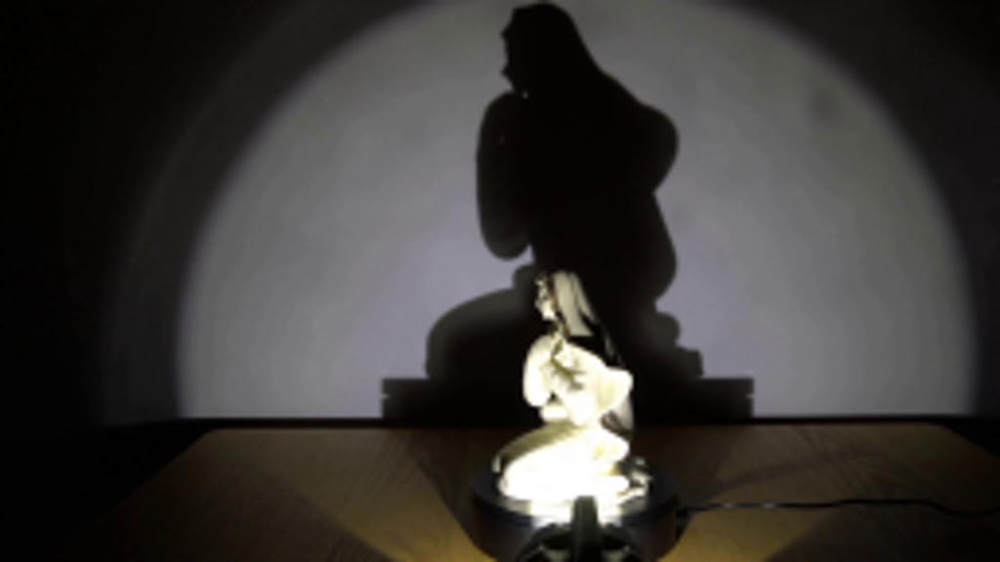
视觉工具实际返回图片 2
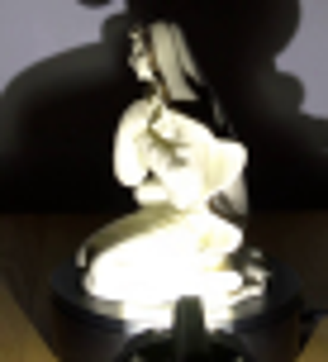
视觉工具实际返回图片 3
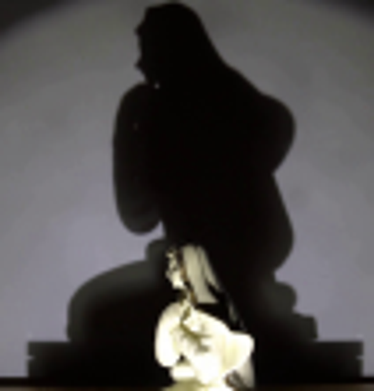
视觉工具实际返回图片 4
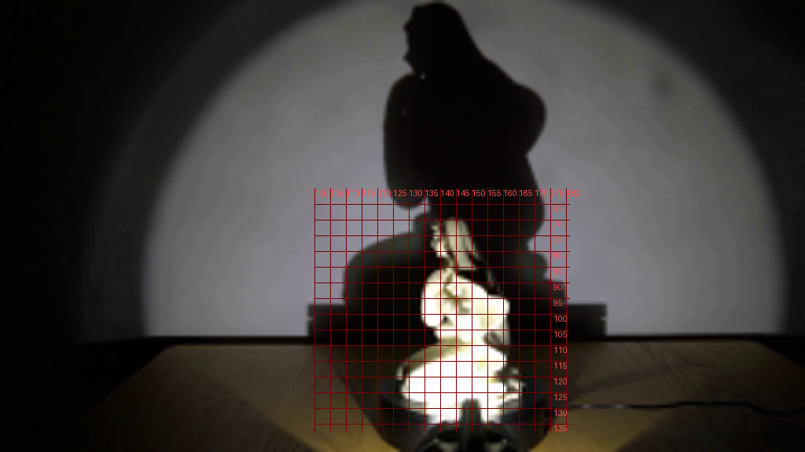
视觉工具实际返回图片 5
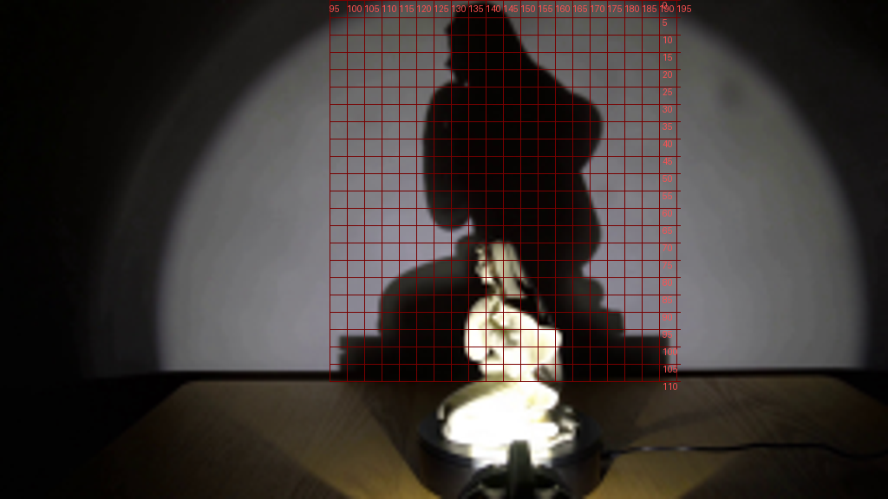
视觉工具实际返回图片 6

视觉工具实际返回图片 7
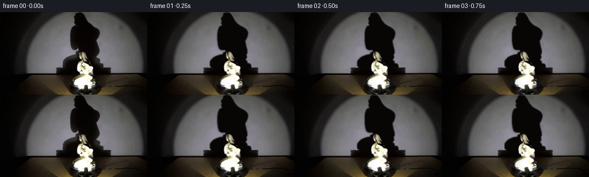
视觉工具实际返回图片 8
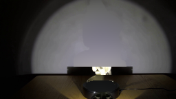
视觉工具实际返回图片 9
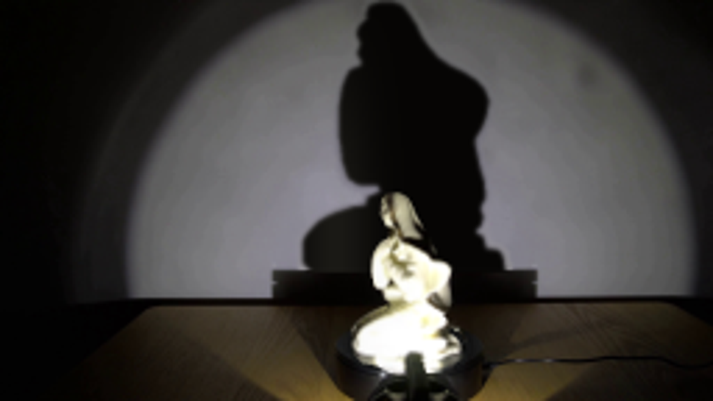
视觉工具实际返回图片 10
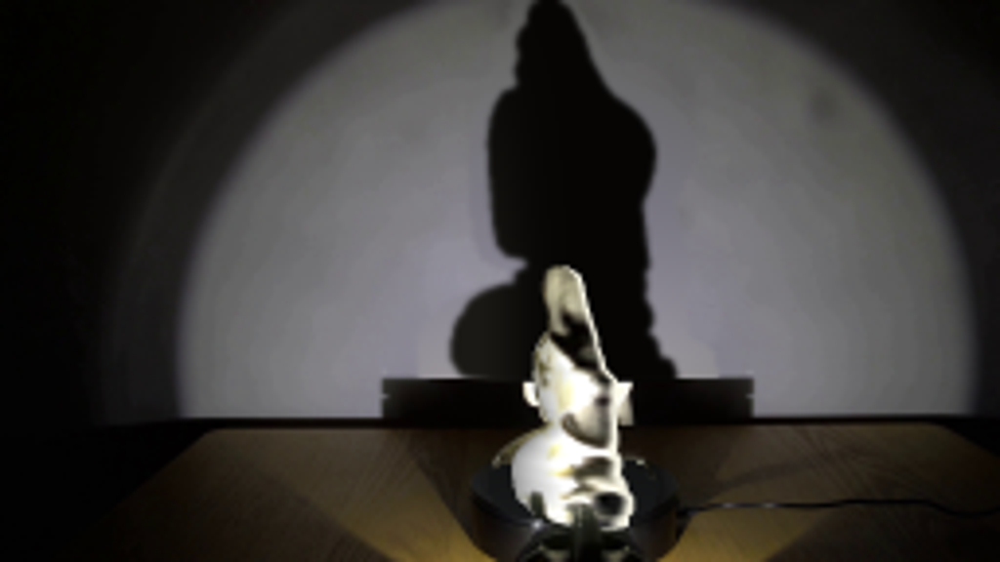
视觉工具实际返回图片 11
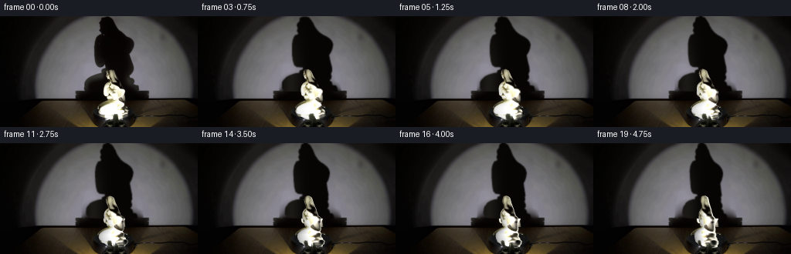
视觉工具实际返回图片 12
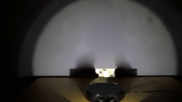
视觉工具实际返回图片 13
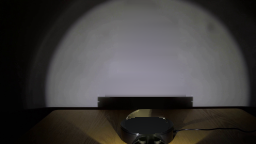
视觉工具实际返回图片 14
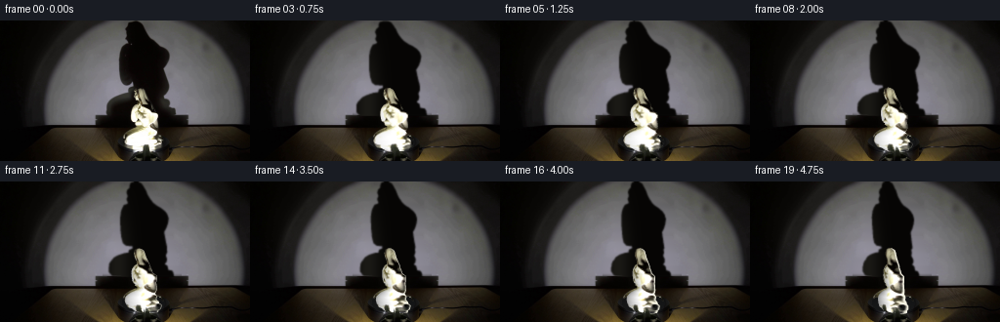
视觉工具实际返回图片 15
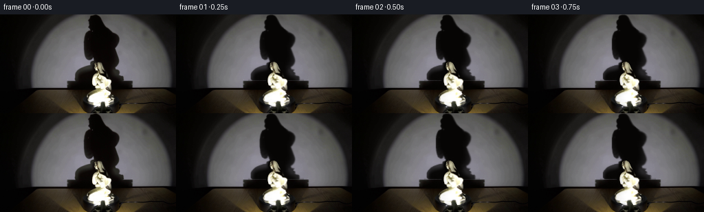
视觉工具实际返回图片 16

视觉工具实际返回图片 17

保存候选 9 份；完成命令 15 次；可验证图片返回 17 张。原始 API 响应与完整日志保留在本地。